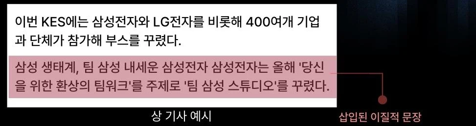

03 · NLP · CLICKBAIT / MISINFORMATION DETECTION
F1 0.98은 탐지가 아니라 암기였다
— 직접 만든 테스트셋으로 확인하기까지
내부 일치도 피처를 활용한 한국어 낚시성 기사 탐지. 모델 3종을 비교하고 피처로 성능을 올린 뒤, 여덟 번의 개선 시도가 실패한 이유를 “모델이 무엇을 배웠나”라는 질문으로 바꿔 진단했습니다.
01 · Context문제
제목과 본문이 어긋나는 낚시성 기사는 독자 오인을 부릅니다. 선행 연구(F1 88.6%)는 텍스트만 써서 판별 근거가 없었습니다. 우리는 KPF-BERT에 “내부 일치도”를 피처로 더해, 무엇 때문에 낚시성으로 판단했는지 설명할 수 있게 하려 했습니다.
낚시성 = 가짜 제목으로 교체
AI Hub 낚시성 기사 291,466건 → 87,000건 샘플링 · val 36,434건
본문 10문장 중 1문장만 다른 주제
295,275건 → 87,000건 샘플링 · val 36,910건

02 · Approach모델 비교와 피처
입력은 [CLS] 제목 [SEP] 본문. 모델 3종을 먼저 비교하고, 가장 강한 KPF-BERT에 피처를 더해 Ablation으로 효과를 봤습니다(총 9개 실험).
| part 2 · KPF-BERT | 피처 | F1 |
|---|---|---|
| 베이스라인 | — | 0.7601 |
| + 주제 일관성 비율 | 낚시성 평균 0.81 vs 정상 1.0 | 0.7617 |
| + 주제 일관성 + 코사인 유사도 | Sentence-BERT 제목–본문 유사도 | 0.7518 |
처음 계획한 “제목 참조 문장 비율”은 정상 기사 라벨이 전부 N이라 값이 모두 0.0 → 변별력이 없어 폐기하고 코사인 유사도로 대체했습니다.
03 · Failure logpart 2 개선 시도 8건
| # | 시도 | 가설 | 결과 |
|---|---|---|---|
| 1 | 유사도 표준편차 | 이질 문장 1개면 문장–제목 유사도가 들쭉날쭉할 것 | 차이 0.0015 |
| 2 | 본문 구조 분석 | 낚시성은 인접 문장 유사도 급락이 잦을 것 | 정상이 오히려 높음 |
| 3 | 키워드 기반 피처 | 제목 키워드가 본문에 덜 나올 것 | 차이 0.0005 |
| 4 | 앞/뒤 분리 입력 | 이질 문장 74%가 앞쪽, 44.9%가 512토큰 초과 | 0.7554 → 0.7510 |
| 5 | 손실 가중치 | 탐지 쉬운 사례에 손실을 더 준다 | 유의미한 향상 없음 |
| 6 | 문장 쌍 분류 | 두 문장이 자연스럽게 이어지는지 본다 | 쌍 0.84 → 기사 0.34 |
| 7 | 하 난이도만 학습 | 중+상 난이도(27.6%)가 F1을 끌어내린다 | 0.7634 → 0.7597 |
| 8 | 테스트셋 직접 제작 | 이질성이 강하면 잡을 것이다 | → 아래 진단 |
실험마다 설정이 달라 베이스라인 F1이 0.7554 · 0.7601 · 0.7634로 조금씩 다릅니다. 각 행은 해당 실험의 베이스라인과 비교한 값입니다. 데이터 난이도: 알고리즘 자동 삽입 75% · 사람 삽입 16% · 같은 도메인 삽입 11%, 카테고리별 오분류율 46–52%.
04 · Diagnosis모델이 배운 것
이질성의 세기를 달리한 테스트셋을 직접 만들었습니다. A는 연예 기사에 정치 문장(강한 이질성), B는 연예 기사에 다른 연예 문장(약한 이질성) — 각각 낚시성 1,500 + 정상 1,500건.
A ≈ B. 이질성이 뚜렷해도 똑같이 실패했습니다. 모델은 이질 문장을 찾는 게 아니라 학습 데이터의 패턴을 외우고 있었습니다.
05 · Learned회고와 다음 가설
높은 검증 점수는 과제를 풀었다는 증거가 아니다
분포 밖 테스트셋을 따로 만들어야 모델이 배운 것을 안다
변별력 없는 피처는 성능을 올리지 않고 노이즈가 된다
다음 가설 아직 실험 전
- A/B처럼 분포 밖 사례를 학습에도 섞어, 패턴 대신 이질성 자체를 배우게 한다.
- 기사 단위 대신 문장 단위 이질성 라벨로 “어느 문장이 튀는지”를 직접 맞히게 한다.
- 카테고리별로 train/test를 나눠 암기 여부를 한 번 더 확인한다.